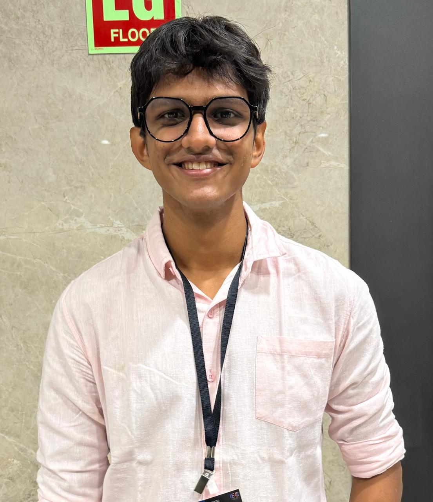
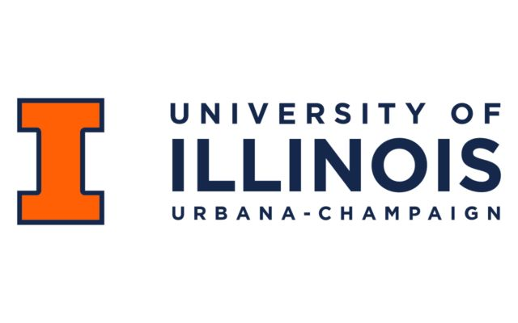
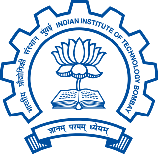
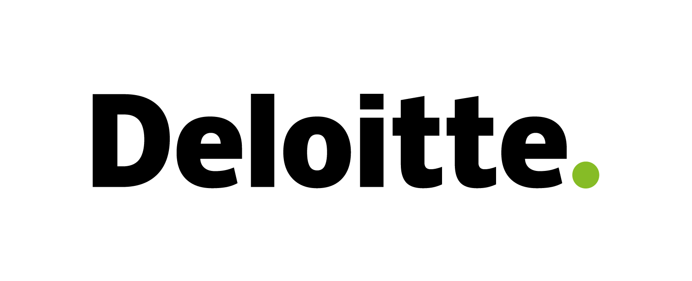

Tanay Kinariwala
Computer Engineering Student | AI/ML Research
Sardar Patel Institute of Technology
Mumbai, India

I am a fourth-year Computer Engineering student. My research interests lie at the intersection of large language models, retrieval-augmented generation, multi-agent systems, NLP, and applied machine learning. I am particularly interested in building reliable, knowledge-grounded AI systems that can reason over complex information and operate in real-world environments.
Currently seeking research collaborations and internship opportunities in AI/ML, particularly involving agentic systems and knowledge-enhanced AI.
Education
B.Tech. in Computer Engineering
Minor in Management
Publications
A Sovereignty-Preserving Enterprise AI Copilot with Hybrid Retrieval and Self-Healing Text-to-SQL
Proposed a model-agnostic Enterprise AI framework integrating Hybrid RAG, self-healing Text-to-SQL, and RBAC to preserve data sovereignty.
Multi-Agent RAG for Automated Grading
Developed a Multi-Agent RAG framework combining Actor–Critic Reflexion achieving 98.97% human correlation while minimizing hallucinations.
Two-Stage Time-Topological Optimization for Demand-Responsive Transit Design
Created a genetic optimization framework using 2.1B+ GPS records that reduced vehicle kilometers traveled by 47.6%.
Machine Learning–Driven Weekly Momentum Stock Selection System
Proposed a momentum investing framework using walk-forward validation across 4,000+ stocks yielding a +5.59% weekly alpha.
Cryptographic API Misuse Detection Using BERT-Based Model
Developed a BERT-based deep learning framework capable of automating the identification of cryptographic API misuses directly from source code.
Experience
University of Illinois Urbana-Champaign (UIUC)
Built LightGBM models predicting checkpoint failures across 104K+ SWE-agent runs, achieving 0.871 ROC-AUC.

Research Intern, IIT Bombay
Developed a scalable geospatial analytics pipeline and optimization framework, reducing transit route cycle times by 49.6%.

Software Engineer Intern, Deloitte
Developed and deployed a production-ready, full-stack web application for a major banking client.

Freelance Software Developer
Led the end-to-end development and deployment of three applications for businesses across the healthcare and manufacturing domains.
Selected Projects
Enterprise AI Platform
Built a secure, RBAC-enabled platform supporting RAG-based natural language interaction with PDFs, CSVs, and SQL databases.
Automated Answer Sheet Evaluation System
Developed an evaluation pipeline integrating OCR and RAG to automate rubric-aware grading across 1,000+ descriptive answer sheets.
Momentum Investing using Machine Learning
Engineered an end-to-end ML framework for momentum stock selection backtested over 60+ weeks of historical market data.
Technical Skills
Leadership
Vice Chairperson
Managed end-to-end client engagement for 4+ industry clients, delivering technology consulting solutions.
Joint Secretary
Coordinated 100+ members and executed 20+ large-scale events with cumulative participation exceeding 4,000 attendees.
Director General
Directed and organized a university-level MUN conference overseeing planning and cross-functional execution for 500+ participants.